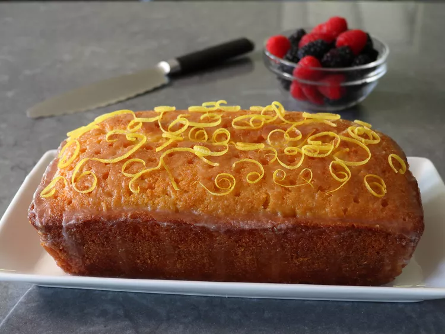

Delicious Lemon Drizzy Cake
End a meal off right by following up with this delicious cake for a dessert. Best served chilled.
Ingredients
Cake
- 1 cup white sugar
- 2 lemons, zested
- 2 1/4 cups self raising flour(see note)
- 1/2 teaspoon baking powder
- 1/4 teaspoon fine salt
- 1 cup (2 sticks) unsalted butter, room temperature
- 4 large eggs
- 1/4 cup milk
Lemon Drizzle Topping
- 3/4 cup granulated sugar
- 1/3 cup fresh lemon juice
Directions
- Add sugar to a mixing bowl and grate in lemon zest. Stir and let sit for 1 hour if possible to intensify the lemon flavor. Can be skipped if necessary.
- Preheat oven to 350 degrees F (175 degrees C). Line a loaf pan with greased parchment paper.
- Combine flour, baking powder, and salt in a small bowl; add to lemon sugar. Add butter, eggs and milk and beat with an electric mixer until batter is smooth and fluffy. Trasnfer batter into the prepared loaf pan and smooth out the top.
- Bake in preheated oven until a toothpick inserted into the center comes out clean. Should be around 50 minutes. Removes from oven and let cool for 5 minutes.
- Meanwhile for lemon drizzle topping, whisk sugar and lemon juice together in a bowl until smooth.
- Poke holes all over the cake with a skewer, and ladle or pour lemon drizzle topping over the top. Let the cake cool all the way to room temperature before removing it from the pan.
Cook's Notes
- For best results, chill cake before serving.
- You can make your own self-rising flour by sifting together 2 1/4 cups of all-purpose flour with 1.5 tablespoons baking powder and 1 teaspoon fine salt.
- The lemon drizzle topping amounts can be doubled for an extra "moist" version of the cake.
Check out our homepage or other recipes